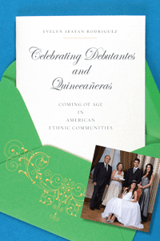

<body bgcolor="#FFFFFF" text="#000000" link="#0000FF" vlink="#CC0000" alink="#CC0000"><center><hr width="350" size="1" align="center" noshade>How young women's coming of age rites cement community relations and reinforce ethnic identity<hr width="350" size="1" align="center" noshade><p><a href="https://cdcshoppingcart.uchicago.edu/Cart/ChicagoBook.aspx?ISBN=9781439906279&&PRESS=temple" target="_top">Buy this book!</a> | <a href="https://cdcshoppingcart.uchicago.edu/Cart/Cart.aspx?PRESS=temple" target="_top">View Cart</a> | <a href="https://cdcshoppingcart.uchicago.edu/Cart/Cart.aspx?PRESS=temple" target="_top">Check Out</a></p><p></p></center><!--none//--><h1>Celebrating Debutantes and Quinceañeras</h1>
<H2>Coming of Age in American Ethnic Communities</H2>
<h3>Evelyn Ibatan Rodriguez</h3>
<P>cloth 1-4399-0627-0 $90.50, May 13, <FONT COLOR=#990033>Available</FONT>
<br>paper 1-4399-0628-9 $30.95, May 13, <FONT COLOR=#990033>Available</FONT>
<br>Electronic Book 1-4399-0629-7 $29.95 <FONT COLOR=#990033>Available</FONT>
<BR> 226 pp
6x9
5&nbsp;tables 4&nbsp;figures
</P><BLOCKQUOTE><I>"Rodriguez presents a nuanced reading of the coming-of-age celebration in both Mexican and Filipino communities in her analysis of the two vis-à-vis larger issues of representation and situated identities. Her careful and insightful writing about issues that seem to lie beneath the surface of many of these celebrations includes extensive quotes from fieldwork that add depth and meaning to the analysis and discussion of the sexuality and complex social and economic networks inherent in these rituals."</I> <br>&#151<b>Norma Elia Cantú</b>, Professor of Latina/o Studies and English at the University of Missouri, Kansas City, and author of <I>Canícula: Snapshots of a Girlhood en la Frontera</I></I></BLOCKQUOTE>
<P>Looking beyond the satin gowns, opera-length gloves, and sparkling tiaras that signify Filipina debutantes and Mexican quinceañeras, Evelyn Ibatan Rodriguez examines the meaning of these coming-of-age rituals for immigrant American families. <I>Celebrating Debutantes and Quinceañeras</I> draws parallels between these communal ceremonies, as they share a commonality in Spanish heritage and Catholicism in a highly ritualized celebration. Rodriguez analyzes these rites and festivities to explain what they reveal about the individuals, families, and communities that organize and participate in them.
<P>Drawing on over fifty in-depth interviews with members of these fast-growing American Asian and Latino populations, Rodriguez shows how these communal celebrations of daughters have been adapted by immigrant families to assert their cultural pride and affirm their American belonging. <I>Celebrating Debutantes and Quinceañeras</I> provides an intimate and compelling portrait of the various ways immigrants and their children are purposefully, strategically, and creatively employing Filipina American debutantes and Mexican American quinceañeras to simultaneously challenge and assimilate into U.S. culture and forge new understandings of what it means to be "Mexican," "Filipina," and "American."
<BR>&nbsp;<h2>Excerpt</h2><P>Excerpt available at <a href="http://www.temple.edu/tempress">www.temple.edu/tempress</a></p>
<BR>&nbsp;<h2>Reviews</h2>
<p><I>"Rodriguez makes a significant contribution to the literature on migration, gender, and ritual with her fascinating book, </I>Celebrating Debutantes and Quinceañeras<I>. While there has been analysis of Anglo-American debutante balls, Rodriguez’s study takes on gender, race, class, and the complexities of assimilation with sensitivity. Among her many fine observations are her nuanced discussions of performance of class aspiration and achievement of class mobility in this gendered ritual."</I><br>&#151<b> Allan Punzalan Isaac</b>, Associate Professor of American Studies and English at Rutgers University and author of <I>American Tropics: Articulating Filipino America</I>
<p><i>"</i>Celebrating Debutantes<i> provides a convincing argument about how different migration patterns, rates of assimilation, and socioeconomic statuses result in coming-of-age celebrations taking on divergent meanings for Mexican and Filipino families. Rodriguez deftly weaves Mexican and Filipino histories, experiences of and motivations for migration to America, and shows how Mexican immigrants often use quinceañeras as a way of showing social status in their ability to host elaborate events for their daughters, contrary to stereotypes about their working-class identity or fiscal irresponsibility. For Filipino immigrants, tasteful celebrations allow families a chance to demonstrate how they fit into American culture. For those interested in gender and gender stratification, this book is particularly compelling in its examination of a ritual that celebrates </i>girls<i> as individuals." </I><br>&#151<b><i>Gender & Society</b></i>
<p><i>"Fun, fresh, and fast paced, Evelyn Ibatan Rodriguez’s </i>Celebrating Debutantes and Quinceañeras<i> is theoretically engaged, research-based, and public-minded sociology.... numerous well-told anecdotes and revealing interview excerpts.... The book’s comparative focus, attentiveness to politics and power within and across communities, and deep respect for its research subjects make this a model text for undergraduate courses on immigration; race, gender and ethnicity; and Asian American studies and Latino and Latina studies." </I><br>&#151<b><i>American Journal of Sociology</b></i>
<p><i>"Rodriguez makes a strong case for the quince as a source of building, maintaining, and activating key social networks.... Those with little personal experience in cultural rites of passage may underestimate the power and status associated with such rituals. This book offers a chance to re-examine their value, and it gives real-life insight.... This book is an invitation to learn about these special cultural customs."</I><br>&#151<b><i>Journal of Family & Consumer Sciences</b></i>
<BR>&nbsp;<h2>Contents</h2><P>
<p>Acknowledgments
<br>
<br>1. <I>Una Cordial Invitación</I>
<br>2. “No Two Are the Same”: Quinceañera and Debut Rituals and Performances
<br>3. <I>Lazos</I>/Ties That Bind: Quinceañera and Debut Social Networks
<br>4. <I>Pagdadalaga</I>/Blossoming: Becoming the Debutante
<br>5. <I>Traviesos</I>/Troublemakers
<br>6. <I>Pagalaala Na</I>/Just a Remembrance: The Work of Making Memories
<br>7. Conclusion: The After-Party
<br>
<br>Appendix <I>Nandiyan Lang</I>/Just over (T)Here: Ethnographic Reflections on Researching American Immigrant Families
<br>
<br>Notes
<br>References
<br>Index
</P><BR>&nbsp;<H2>About the Author(s)</H2>
<P><b>Evelyn Ibatan Rodriguez</b> is an Associate Professor of Sociology at the University of San Francisco.</P>
<BR><H2>Subject Categories</H2>
<p><A HREF="/tempress/asian_amer.html" TARGET="_top">Asian American Studies</a>
<BR><A HREF="/tempress/latino.html" TARGET="_top">Latino/a Studies</a>
<BR><A HREF="/tempress/women.html" TARGET="_top">Women's Studies</a>
</p>
<p align="center"><a href="https://cdcshoppingcart.uchicago.edu/Cart/ChicagoBook.aspx?ISBN=9781439906279&&PRESS=temple" target="_top">Buy this book!</a> | <a href="https://cdcshoppingcart.uchicago.edu/Cart/Cart.aspx?PRESS=temple" target="_top">View Cart</a> | <a href="https://cdcshoppingcart.uchicago.edu/Cart/Cart.aspx?PRESS=temple" target="_top">Check Out</a></p><p><font face="Arial" size="1"><a href="copyright.html" onMouseOver="window.status='Web Copyright Policy';return true;" onMouseOut="window.status=''" title="Web Copyright Policy">&copy;</a> 2015 <a href="http://www.temple.edu" target="new" onMouseOver="window.status='Link to Temple University home page';return true;" onMouseOut="window.status=''" title="Link to Temple University home page">Temple University</a>. All Rights Reserved. http://www.temple.edu/tempress/titles/2141_reg.html</font></p>